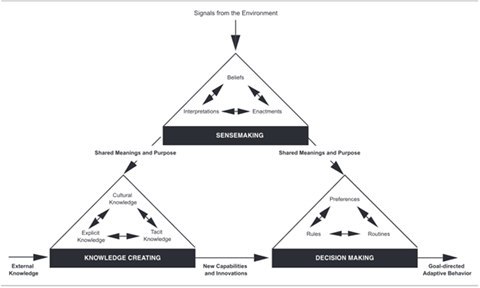
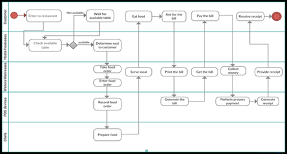
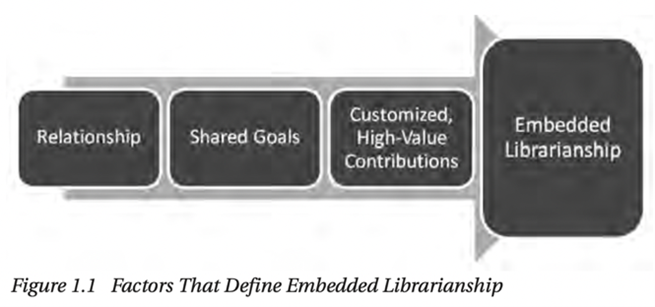

Chapter 6. Information in Organizations
Learning Objectives
In this chapter, we will discuss some principles of information and knowledge management as it relates to organizations. We will touch on Senge’s concept of learning organizations and Choo’s theoretical framework of knowing organizations. We will also consider different tools and applications of these frameworks.
Introduction
Organizations are entities that are made up of people working for a common purpose or goal. Fields such as Business, Finance, Management, Political Science, and others will categorize and define organizations as they relate to those fields. These fields of study may seek to analyze the hierarchies, structures, or success of different kinds of organizations. There are many theoretical frameworks as to how organizations function and flourish. Still, we will focus on frameworks that discuss how organizations interact with information to meet their goals.
There are a variety of types of organizations, which may have different needs and structures, including:
Government
NGOs (Non-Government organizations, generally non-profits or charities)
Corporations
How do these organizations differ? Consider their goals and their composition.
How might their information needs be similar or different?
The Learning Organization
Business Management scholar Peter Senge developed the idea of the learning organization. He envisioned organizations that excelled in the face of rapid change through adaptability and informed decision-making. He wrote that learning organizations are “…organizations where people continually expand their capacity to create the results they truly desire, where new and expansive patterns of thinking are nurtured, where collective aspiration is set free, and where people are continually learning to see the whole together” (Senge, 2006).
Senge’s concept was influenced heavily by systems theory. Systems theory is an interdisciplinary term exploring how groups, systems, or individuals may interact in a larger system. Broadly speaking, it can be described as how things can be greater than the sum of their parts. Senge explored his concept of learning organizations in relation to the systems theory of organizations – which seeks to describe and explain how the organization works as a whole to accomplish its goals. Senge wrote a framework of core principles for the learning organization, including the concept he called team learning. Senge describes team learning as a skill in which individuals within the organization can discuss and have a dialogue with each other for the organization to learn and advance.
If you want to know more about the systems theory of organizations, consider watching this YouTube video (not mandatory, only if you are curious or confused): Systems Theory of Organizations.
The Knowing Organization
We can think of organizations from an information-based view in which the people in organizations are working with information to accomplish specific outcomes. Information Management scholar Chun Wei Choo created a framework in which these outcomes can be divided into three categories: sense-making, knowledge creation and decision-making.
Sense-making
Sense-making is a process through which an organization creates its identity and a shared context for action and reflection by collecting and interpreting data from its environment (Choo, 2006). Sense-making is s three-steps process that begins when an Ecological change in the organizational environment results in a disturbance that the organization needs to make sense of:
- Enactment. Organizations interact with their environment by selectively bracketing, highlighting or isolating data or by adding features to the environment to facilitate data acquisition and sense-making. After enactment, the organization has data to interpret.
- Selection. Organizations select plausible interpretations that best fit with past understandings.
- Retention. The products of successful enactment and selection are retained for future use. “It is like a historical document, stored perhaps as stories, explanations, and beliefs or as a map of relationships between events and actions. In these forms, interpretations are remembered and made available for future cycles of enactment and selection.” (Choo, 2006, p. 6)
Knowledge Creation
Organizations must continuously create knowledge. Knowledge can be created by managing the relationship between explicit and tacit knowledge. Tacit knowledge is embodied knowledge that is hard to formalize or communicate to others (Choo, 2005). Explicit knowledge is the opposite; it is formal knowledge that can easily be transmitted between both individuals and groups, such as recipes, formulas, or instructions.
Choo (2006) describes four processes through which new tacit and explicit knowledge is created:
- Socialization. “process of acquiring tacit knowledge through sharing experiences. Tacit knowledge is transferred from an experienced person to another person by the two working side by side, sharing the same work and social setting.” (Choo, 2006, p. 8)
- Externalization. “process of converting tacit knowledge into explicit concepts through the use of abstractions, metaphors, analogies, or models.” (Choo, 2006, p. 9)
- Combination. “process of creating explicit knowledge by finding and bringing together explicit knowledge from a number of sources.” (Choo, 2006, p. 9)
- Internalization. “process of embodying explicit knowledge into tacit knowledge, internalizing the experiences gained through the other modes of knowledge creation into individuals’ tacit knowledge bases in the form of shared mental models or work practices.” (Choo, 2006, p. 9)
Decision Making
When making decisions, organizations operate under the principle of bounded rationality and are constrained by cognitive capabilities, available knowledge, and values. To help individuals in the organization make decisions, the organizations establishes value premises and factual premises. Value premises determine the desirable traits of an alternative, and factual premises determine what information is relevant to help the decision-making process (Choo, 2005). Then the organization performs a search for satisfactory alternative decisions.
The Organizational Knowing Cycle
Choo (2006) describes an organization’s flow from one “mode” to another as the Organizational Knowing Cycle.
“In the knowing cycle, a continuous flow of information is maintained between sense-making, knowledge-creating, and decision making, so that the outcome of information use in one mode provides the elaborated context and the expanded resources for information use in the other modes.” (Wei Choo, 2001)

Choo comments that learning organizations will encourage and foster innovation through this cycle. Innovations and new concepts are created and evaluated based on the organization’s needs and goals. Concepts created are then tested and re-evaluated before being enacted in other organizational levels to generate new knowledge creation cycles.
Business Process Models
As we consider ways organizations can learn and know, we can look at different tools to help sense-making, knowledge creation, and decision-making. One such tool is the Business Process Model.
Business Process Models (BPMs) are tools that people within the organization can use to visualize the flow of different processes. These tools can also help us visualize the organization’s and individuals’ information needs at each step of the process. As different individuals and departments in an organization may come together to complete a task, so will the information needed to complete that task. By creating accurate BPMs, organizations can help create transparency for workers, allowing information needs to be better identified and met.
BPMs will be discussed more in your Information Systems class, but we can develop a surface understanding of their usefulness in organizations. Each BPM will have a start point (where the process begins) and an end point (where the process is complete) and may describe different steps for each individual involved. The steps for different individuals may be visually represented in different “lanes,” like in the below BPM for a restaurant process. The customer, host/hostess, waitstaff, chefs, and even the point of sales system are displayed in their lane. Each lane outlines steps of how and when an individual will participate in the entire process.

Image source: (Somphanpae & Boonsiri, 2016)
By examining each step of the process, we can anticipate what decisions individuals will have to make during their steps and seek to ensure they have the information they need. By ensuring that individuals are equipped with the information they need to complete their steps, we can help to ensure that the organization can carry out the desired process.
At what point in Choo’s model could a BPM be helpful for the organization – sense-making, knowledge creation, or decision-making?
Embedded Librarianship
People tend to identify librarians based on the buildings they work in, thinking that “a librarian works in a library”. This is not always the case. As traditional reference services are becoming less common due to the rise of the internet and the changing role of libraries, librarians are moving out of physical libraries. Embedded librarianship occurs when librarians are embedded within organizations and institutions. These librarians develop strong relationships with the groups of people they work with, such as faculty, students, a marketing department or a research team. Embedded librarians are knowledgeable about the work their team is working on (Shumaker, 2012b). “In order for librarians to be effective in the learning community, they must be viewed by all as a partner in the community. Real familiarity with the course and content is vital to change the perception of students that the librarian is ‘just visiting’ and is not an integral part of the learning community” (Muir & Heller-Ross, 2010, p. 92)
Three main factors define embedded librarianship: ongoing relationships, knowledge of and commitment to shared goals, and customized high-value contributions (Shumaker, 2012b).

Advantages of Embedded Librarianship
Embedded librarians can anticipate their patrons’ needs; they don’t wait to be asked for help. They work for an entire team and help multiple people at once. Embedded librarians understand the needs of their team because they are so familiar with the project. “With embedded librarianship, transactions still occur- documents are requested, instructional sessions are held, or documents are added to a shared virtual workspace- but the emphasis shifts from the transaction to the project” (Shumaker, 2012a, p. 13). Embedded librarianships are responsible for more than just providing a service.
Other Kinds of Mobile Librarianship
It is not only embedded librarians that move outside of traditional library spaces. You may find a few different kinds of librarians outside the library. (Shumaker, 2012a)
Virtual librarians. Virtual librarians are available remotely (sometimes 24/7 due to time zones) through phone, email, instant messaging or texting. These librarians are similar to traditional librarians in that they passively wait to be asked for help.
Roving librarian. A librarian who sets up in different locations such as the classroom or cafeteria. This librarian differs from embedded as they are still disconnected from the organization’s work but are there to answer questions.
Personal librarian. First-year undergraduate students are each assigned their own personal librarian to go to for research help throughout their degree. This doesn’t work well with how many group projects are assigned in universities today, as each student would have a different librarian.
Consulting librarian. Consulting librarians work with either a team or an individual client. They establish long-term relationships and are always planning for the next project. The only drawback is that they aren’t always considered part of the team.
Case study
Wren and Tracey are out for a walk at Point Pleasant on a sunny Saturday morning in October. Last spring, the gang graduated from the MI program and have not seen each other since. The two are vecited to catch up and learn how everything has been going for the last few months.
Wren: Tracy! It feels like forever since I’ve seen you; it’s so good to catch up finally!
Tracy: It does feel like it’s been ages, but time really does fly. Hey! Have you heard what Jude and Dante have been up to this summer?
Wren: Yes- I grabbed dinner with them two weeks ago when they visited Halifax. Dante got an entry-level position at South Shore Public Libraries and moved to Lunenburg. Jude has been working as a digital archivist at a professional organization in Quebec City.
Tracy: That’s awesome; they got just the jobs they sought. How have you been?
Wren: I’ve been so busy! I was offered a full-time position with the tech start-up that I did my practicum at starting right after we graduated, and it’s been going well. At my firm, we develop solutions for businesses to collect and analyze data from their environment to monitor their performance and inform decisions. Our software has modules designed for different teams at various levels of the organization. The Information Management program prepared me for this because I’m part of the bridge team that works with clients to understand their needs and the software development team. What about you?
Tracy: I have been doing consultant work. It can be pretty intense, though; we move from one housefire to another. We primarily work with small businesses, especially NGOs or non-profits. But their infrastructure can be…messy. It is good, challenging work. I feel like I’m contributing to something good at the end of the day, you know?
Wren: It sounds like this job has the potential to be quite satisfying and fulfilling for you!
While walking and talking, Wren receives a notification on her phone. Opening her email, she finds out that a large corporate organization has bought out the small company she works for.
Wren: Oh, wow. That was an email from my boss to everyone in the office. A large organization has just acquired our company! Good grief!
Tracy: That will be a big change. I dealt with a similar situation at a job I had in my late twenties. A corporation bought out the company I was working for, and everyone was apprehensive about how the transition would go.
Wren: Were people okay with the changes that came about?
Tracy: It was a big challenge at first. It took some time, but eventually, we ended up better off. I’m still connected with some of my old coworkers on LinkedIn, and they’ve told me how happy they are with how the company culture has developed. In my past work, I’ve also helped organizations determine their information needs and implement processes that address and meet them. But I agree with you – change is uncomfortable. Plenty of people at both companies will feel uncertain about the effects of the change. Do you know this new company?
Wren: I looked at jobs with them when I graduated, but they’re too big for me. I didn’t want to go full on corporate – no offence. I wanted someplace small where I could learn and see the impact of my work. Now, being absorbed by a corporate organization… I worry that it may get too bureaucratic and inhibit our efficiency.
Tracy: Yeah, no offence taken – I get it. And I totally agree about small businesses – you learn a lot about how they work. Trust me, they will want you to be a part of this, especially since you understand the culture of your workplace. You can help new employees understand what is essential to your team and make this work. What does communication look like in your current workplace?
Wren: Since we’re a small team, communication essentially happens in person, by email, and mostly on our shared whiteboard. It’s all a very fast-paced environment with changes happening quickly. No one is really in charge; it’s mostly a collaborative team.
Tracy: Ah, I see. You guys do software… so the environment needs to be quite agile?
Wren: Exactly! We move fast, minimize formal communication, and basically just get stuff done! Now, we’ll have many new external stakeholders to answer to, potentially delaying our ability to execute quickly. Our company used to decide on its own internal objectives, and now we will be tasked with answering to larger-scale goals and external determinants of value. Before, we were happy to place user-centred design at the forefront of our company goals and our small successes were based on integrating customer feedback, but now, at a corporate level, I’m not sure what benchmarks of success we will have to meet.
Tracy: Yeah….so change management is going to be critical here. There are going to be some conflicts in work culture and communication methods. I hope they have someone that’s done this before.
Wren: Well, I know the company quite well; I’m not sure a larger company seeking to incorporate automated knowledge management software appreciates the human perspective I bring.
Tracy: I can understand why you might feel this way; it doesn’t feel great to have to constantly defend the importance of your role and the value you add to the information processes of your organization.
Wren: Yes, exactly, Tracy. In a smaller workplace environment, it was clear how employees contributed to the work they did and to what degree. Now, I might be tasked with writing multiple reports a year outlining how my position is critical to the company’s success.
Tracy: I’m sorry, Wren. If it makes you feel better, your friendship is invaluable to the gang and me. You are a fantastic communicator, though, so I think as long as you exercise those skills during this transition period, everything will work out okay. Growing pains!
Consider the exchange of information and knowledge in the workplaces you have worked in and the professional environments you have been a part of. Reflect on the importance of communication and how it impacts the success of an organization’s goals.
Discussion Questions
What should Wren’s company do to ensure a smooth transition with the merger? How can they ensure that the information flow stays efficient?
Consider your current or past places of work- how does information flow internally? How does it flow externally?
Do you find communicating easier in smaller team environments than in larger ones? How do communication processes change based on the size of the group? How are our environments influenced based on information processes?
Think about how these organizations fit into society in a larger context; what role do they play in facilitating communication and information flow on a societal level?
Consider the Data-Information-Knowledge-Wisdom pyramid. Does it seem relevant to the organizations you have worked in? How could you reimagine it based on the flow of information and knowledge exchange in the organizations you have been a part of?
Do you think there is a difference in how non-profit or government-funded organizations share knowledge internally compared with for-profit?